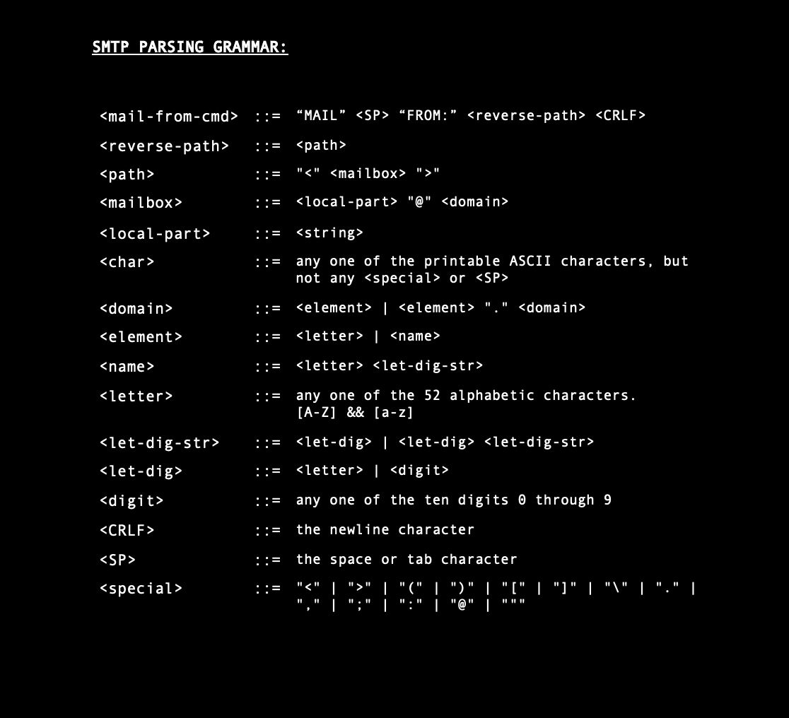

"You've got mail" is an SMTP server, client and parser that interoperate over a network by using TCP sockets, which I developed using Python.
This was an assignment for my Internet Services + Protocols class at UNC-Chapel Hill. We were tasked with building an application that functioned like email did in the 1980's-1990's, via SMTP servers and clients—I decided to name this project after one of my all-time favorite films.
Development:
The first part of this program was creating a parser. This program acts as a server by taking in input strings from a "client" and evaluating if they're part of the SMTP grammar (pictured below). The second part of this project, was an expansion of the SMTP grammar and a preparation of error codes for strings received that are not in the grammar. The third part, was the 'meat' of the project which was the server processing. The processing works by reading a forward-file (from that of Part 2) and generating/writing to standard output the SMTP messages necessary to send the contents of the mail messages in the forward-file to a destination SMTP server. It both generates SMTP server messages and listens for the SMTP response messages that a real server would emit. The fourth and last part, is a program that puts all of the client-server functionalities into one.
"You've got mail" from the 80s
December 2021
